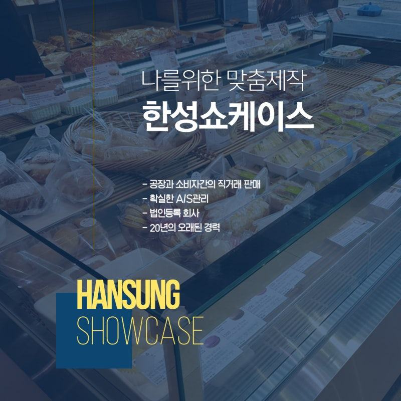
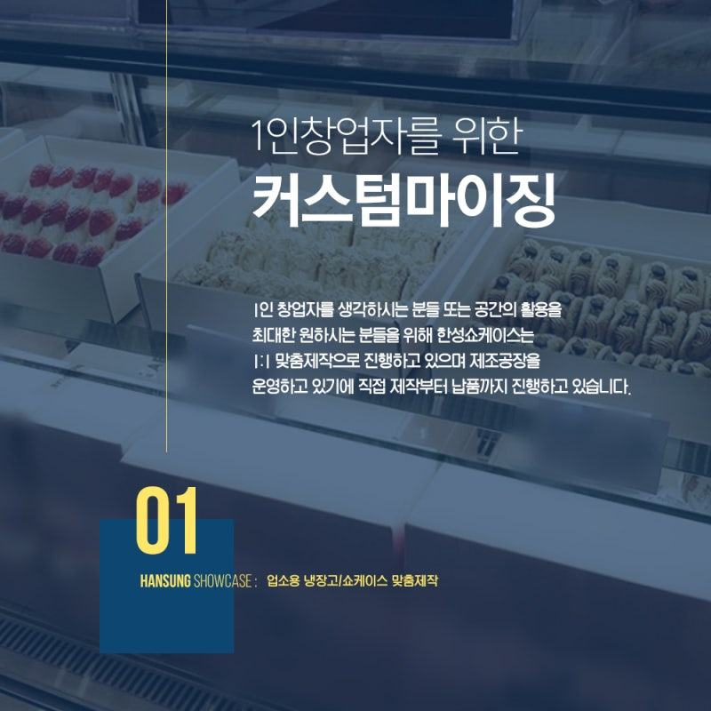
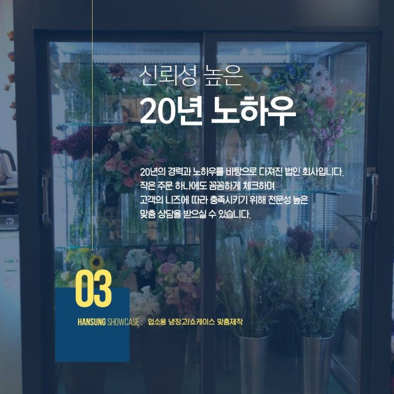
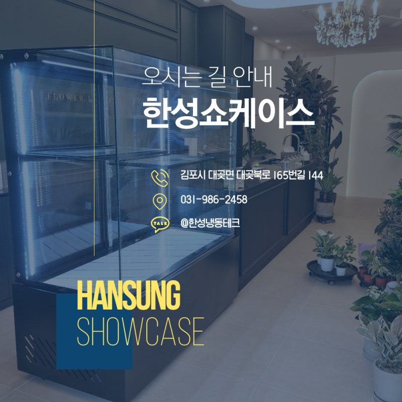

와인(음료)쇼케이스
업소용음료수냉장고 보증, 계약 전에 읽어 둘 조건들

업소용음료수냉장고 보증은 몇 년이냐보다 어떤 부품이 포함되고, 출장 수리가 되는지, 여름 성수기에 얼마나 빨리 와 주는지가 실제 차이를 만듭니다. 계약서나 보증서에 이 세 가지가 적혀 있는지, 그리고 설치 환경 때문에 보증이 제외되는 조건은 없는지 먼저 확인하세요.
안녕하세요. 음료 냉장고와 음료 쇼케이스를 매장 크기에 맞춰 제작하는 한성쇼케이스입니다.
편의점, 카페, 식당에서 음료 냉장고는 하루 매출을 떠받치는 장비입니다. 그래서인지 구매 상담 중에 "보증은 몇 년이에요?"라는 질문을 가장 먼저 받곤 합니다.
그런데 막상 고장이 나서 보증서를 꺼내 보면, 기간 안인데도 부품비가 따로 나오거나 출장비가 붙는 경우가 있습니다.
보증이라는 단어 하나에 기대기보다 그 안에 무엇이 들어 있는지 읽어 두셔야 하는 이유죠.
오늘은 음료 냉장고 보증 조건을 읽을 때 짚어야 할 항목과, 보증을 지키기 위해 사장님이 평소에 챙길 것을 정리해 보겠습니다.
1. 기간보다 먼저 볼 보증 범위
음료 냉장고에서 고장이 잦은 부품은 온도를 제어하는 TC(온도 컨트롤러)와 냉기를 돌리는 팬모터입니다.
그다음이 문 패킹, 조명, 콤프레셔 순으로 문의가 들어옵니다. 보증서에 '제품 전체'라고만 적혀 있다면 이 부품들이 모두 포함되는지 따로 물어보세요.
소모품으로 분류돼 보증에서 빠지는 항목도 있습니다. 문 패킹이나 조명이 여기에 해당하는 경우가 많은데, 음료 냉장고는 문을 하루 수십 번 여닫기 때문에 패킹 교체가 생각보다 빨리 찾아옵니다.
- TC·팬모터·콤프레셔가 보증에 들어가는지
- 소모품으로 빠지는 항목이 무엇인지
- 부품비와 공임이 모두 포함되는지
2. 출장 수리와 성수기 대응
음료 냉장고는 무게와 부피 때문에 센터로 들고 가기 어렵습니다. 매장으로 방문해 고쳐 주는지, 지방이라면 출장 거리 때문에 추가 비용이 붙는지 확인해 두세요.
여름에는 기온이 올라 냉장고 안팎 온도 차가 커지고, 문 여는 횟수도 늘어 부품 부담이 한꺼번에 커집니다.
이 시기엔 A/S 접수가 몰려 작은 고장에도 며칠씩 기다리는 일이 생깁니다. 수리 거점이 가까이 있는지가 보증 기간 숫자보다 중요한 이유입니다.
한성쇼케이스는 전국 240여 개 A/S 센터를 통해 지역별로 접수를 받습니다.


3. 보증이 빠지는 사용 조건
보증서 뒷면에는 대개 제외 조건이 적혀 있습니다. 임의로 분해했거나, 뒷면 통풍구를 막아 열이 빠지지 못했거나, 전압이 불안정한 멀티탭에 다른 기기와 함께 꽂아 쓴 경우가 흔히 포함됩니다.
음료 냉장고는 벽 쪽으로 바짝 붙이거나 위에 박스를 올려 두는 매장이 많습니다. 이런 습관이 콤프레셔와 팬에 무리를 주고, 고장 원인으로 확인되면 보증 처리가 어려울 수 있습니다.
설치 때 통풍 공간과 전원 조건을 같이 확인해 두시면 분쟁 소지를 줄일 수 있습니다.
- 뒷면·상단 통풍 공간 확보
- 전용 콘센트 사용
- 직접 분해하기 전에 먼저 접수
4. 보증 기간 동안 해 둘 일
보증서와 구매 영수증, 명판 사진은 한곳에 모아 두세요. 접수할 때 모델명과 구입 날짜를 바로 알려 드리면 처리 순서가 빨라집니다.
보증이 끝나기 전에 한 번쯤 냉기 상태와 팬 소리, 문 패킹을 점검받아 두는 것도 방법입니다. 이상 징후가 보증 기간 안에 기록돼 있으면 이후 대응이 수월하고, 여름 성수기 전에 점검하면 한창 바쁠 때 멈추는 일을 줄일 수 있습니다.
체크리스트
- 보증 포함 부품 목록(TC·팬모터·콤프레셔)
- 출장 수리 여부와 지역 추가 비용
- 가까운 A/S 거점
- 보증 제외 조건(통풍·전원·분해)
- 보증서·영수증·명판 사진 보관
현장에서 자주 보는 경우: 기성품을 억지로 끼워 넣은 매장
음료 냉장고 상담을 하다 보면 기성품을 들였다가 매장에 맞지 않아 다시 문의하시는 사장님을 자주 뵙습니다.
정해진 틀로 나온 제품을 좁은 자리에 밀어 넣다 보니 뒷면이 벽에 붙고 옆으로 열이 빠질 틈이 없어, 결국 냉기가 약해지고 부품 교체로 이어지는 경우입니다.
한성쇼케이스는 직영 공장에서 폭, 높이, 유리, 조명을 매장 상황에 맞춰 제작하고, 판매 이후의 A/S를 특히 신경 쓰고 있습니다.
가장자리를 슬림하게 잡아 진열 면적을 확보하면서도 통풍 공간을 남기는 식으로 설계하면, 보증 기간 안팎으로 고장 걱정을 덜 수 있습니다.




자주 묻는 질문
보증 기간이 끝난 뒤에도 수리를 받을 수 있나요?
받으실 수 있습니다. 다만 부품비와 출장비가 발생할 수 있으니, 접수 전에 증상과 명판 사진을 보내 주시면 예상 범위를 먼저 안내해 드립니다.
여름에 고장이 나면 얼마나 기다려야 하나요?
지역과 접수 상황에 따라 다릅니다. 성수기에는 접수가 몰리니, 봄철에 미리 점검을 받아 두시면 한창 바쁠 때 멈추는 위험을 줄일 수 있습니다.
중고로 넘겨받은 음료 냉장고도 보증이 이어지나요?
보증 승계 여부는 제조사와 보증서 조건에 따라 다릅니다. 넘겨받기 전에 구매 날짜와 보증서 원본이 있는지 확인해 두시는 게 좋습니다.
매장 조건에 맞춰 만드는 한성쇼케이스
원하시는 제품 사진과 설치할 공간 사진만 보내 주셔도 매장에 맞는 구성을 추천해 드립니다.
- 전국 240여 개 A/S 전담 센터 운영
- 본사 대량 자재 매입으로 품질 대비 합리적인 가격
- 유럽제·삼성 냉각 콤프레셔 적용
- 국내 최초 쇼케이스 전문 디자이너 상주
매장 폭과 원하는 진열 구성을 알려 주세요. 실측과 견적을 안내해 드립니다.
031-986-2458